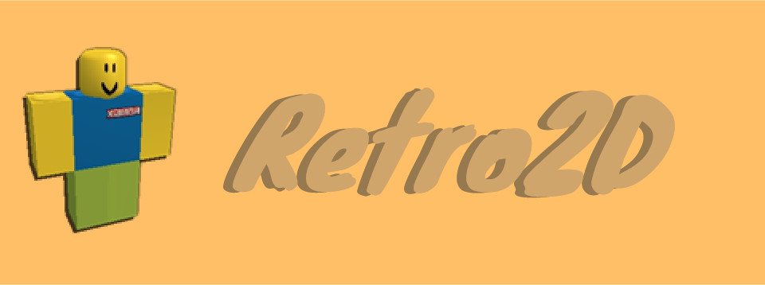

I am Dan, or as some people know me as, Retro2D. I love building projects on the computer, and learning new stuff.
Currently navigating the world of high school... Maybe the most complex thing I have ever done.
View my github!I am Dan, or as some people know me as, Retro2D. I love building projects on the computer, and learning new stuff.
Currently navigating the world of high school... Maybe the most complex thing I have ever done.
View my github!
I have worked on a couple of projects in the past and present. Some of them include:
-DanDB: An all-in-one python module for statistics and graphing (currently unpublished).
-RetroOS: Some random webOS I made for the Stardance challenge (Yes, I KNOW the GUI looks terrible. I am considering revamping it soon.). View source
-Something secret: It is a secret! But I assure you it will be my biggest, most impactful thing ever by far.
-This project: The website you are looking at right now! Done for the Stardance challenge, but planned to be built far beyond the tutorial.
These are my hobbies!
-Coding and computer science (Duh...)
-Chess (I mainly play casually at my high school)
-Gaming (Minecraft, Roblox, Fortnite... all the kiddy games)
-Science (Specifically... nuclear science.)
-Buisiness (Stocks, companies, the entire field as a whole)